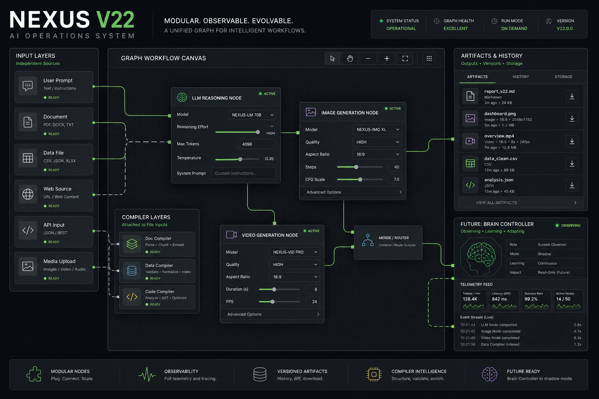

Graph Controls
- Start All global workflow command
- Click-to-center node creation
- Drag-to-position node creation
A practical graph-runtime upgrade for independent input starts, Start All orchestration, model reasoning controls, generated asset history, and future LLM-readable workflow manifests.
GPT Image 2 generated this system map through the
OpenAI-compatible image endpoint. The image and metadata are stored in
assets/ for local review and future handoff.

See machine-manifest.json for the LLM-readable workflow schema.